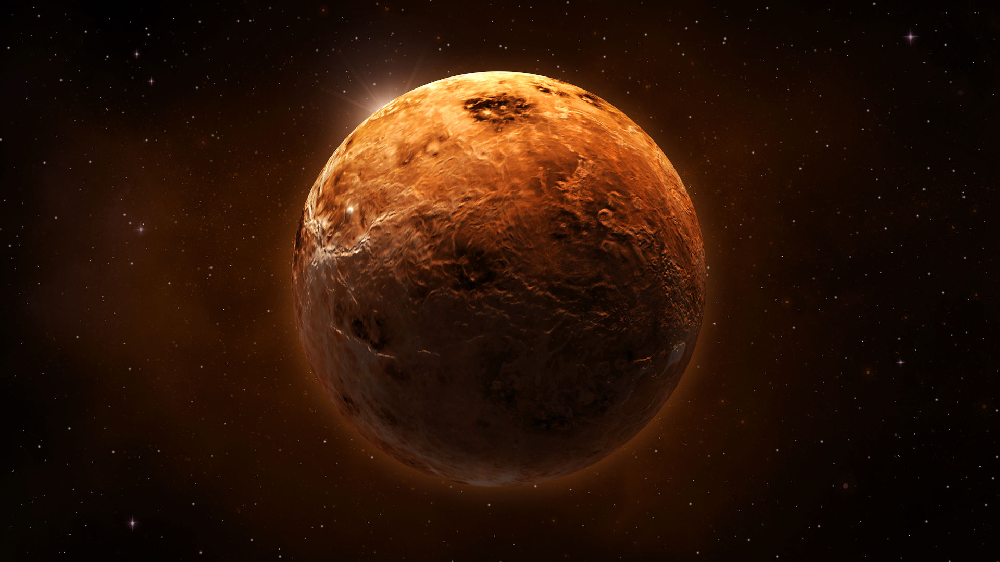

Венера
Открыть карту солнечной системыВенера - вторая планета от Солнца и ближайшая к Земле. Венеру иногда называют «близнецом» нашей планеты: её размеры и масса очень близки к земным. Однако на этом сходство заканчивается.
Венера окутана очень плотным слоем облаков, за которыми невозможно разглядеть поверхность. Из-за парникового эффекта она нагревается до 480°C — абсолютный рекорд для солнечной системы. Облака проливаются кислотными дождями и пропускают только 40% солнечного света, поэтому на планете царит вечный сумрак.
Из-за сильнейшего атмосферного давления (как на глубине 900 метров в земных океанах) ни один исследовательский аппарат, отправленный на Венеру, не просуществовал дольше двух часов. Тем не менее учёным удалось узнать, что атмосфера планеты на 94% состоит из углекислого газа, а состав грунта не отличается от других планет земной группы. На Венере много вулканов, но почти нет кратеров — все метеориты сгорают в плотной атмосфере.

Основные характеристики
День на Венере длится дольше, чем на любой другой планете — около 243 земных суток. Продолжительность года чуть уступает дню — 225 земных суток. Как и на Меркурии, сезонов на Венере нет.
Облака Венеры хорошо отражают солнечный свет, поэтому на земном небе планета светится ярче других. Возможно, именно поэтому древние римляне связали её с богиней красоты и любви. Примечательно, что Венера — одна из двух планет солнечной системы, вращающихся вокруг оси по часовой стрелке.
